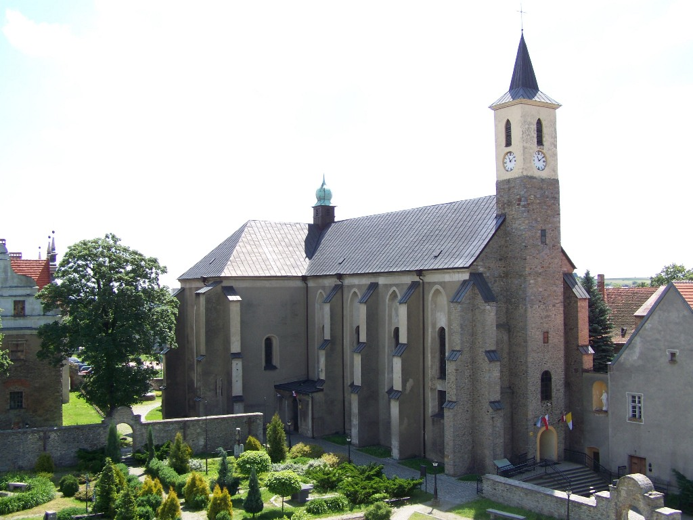

Poka¿ na mapie
Poka¿ na mapie

Ko¶ció³ p.w. ¦wiêtego Krzy¿a
Zabytkowy zespó³ sk³adaj±cy siê z ko¶cio³a parafialnego i przylegaj±cych do niego od po³udnia zabudowañ klasztornych.
Ko¶ció³ sp³on±³ w czasie po¿aru miasta w 1548r. Ponownie uleg³ spaleniu w czasie wojny trzydziestoletniej.
W 1689r. gospodarzami obiektu zostali augustianie przybyli do Strzelina z Wiednia. Odbudowa ko¶cio³a nast±pi³a w latach. 1700 - 1721. W 1811r. augustianie
po sekularyzacji zakonu opu¶cili miasto, a czê¶æ zakonn± przekszta³cono w lazaret wojskowy. Nieprzerwanie od 1842r.
¶wi±tynia pe³ni funkcjê ko¶cio³a parafialnego. W 1895r. czê¶æ klasztorn± przejê³y siostry boromeuszki, które mieszka³y tutaj
do 2007r. W 1945r. budynek zosta³ powa¿nie zniszczony, m.in. zburzona zosta³a wie¿a ko¶cielna. Odbudowê zakoñczono w 1956r.
Ko¶ció³, który pierwotnie pe³ni³ funkcjê oewi±tyni przyklasztornej, z zewn±trz zachowa³ kszta³t nadany mu w XV w. Zbudowany w stylu
gotyckim z miejscowego granitu, na planie krzy¿a z wyd³u¿onym prezbiterium. Wnêtrze posiada natomiast jednolity barokowy wystrój
z I po³owy XVIIIw. Na uwagê m. in. zas³uguje:- o³tarz g³ówny z 1717r., autorstwa znanego na ¦l±sku rze¼biarza Jana Józefa Klima,
z trzema parami kolumn, figurami oew. Augustyna i oew. Moniki oraz oew. Jana Ewangelisty i ¶w. Józefa z Dzieci±tkiem Jezus (figury skrajne)
- ambona , wykonana tak¿e przez Jana Józefa Klima, ozdobiona figurami ojców Ko¶cio³a (¶w. Ambro¿ego, ¶w. Augustyna, ¶w. Hieronima
i ¶w. Grzegorza), rze¼bionymi postaciami Chrystusa Frasobliwego, Matki Boskiej Bolesnej, archanio³ów Gabriela i Rafaela.
Na baldachimie widoczne figurki Czterech Ewangelistów oraz Moj¿esza z tablicami dekalogu.